Research
* denotes equal contribution
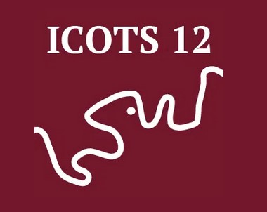
Tips for Developing and Teaching Community-Engaged Statistics and Data Science Courses
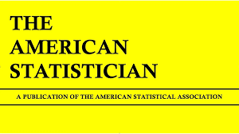
Towards Community-Based Participatory Statistics Research Using Secondary Data
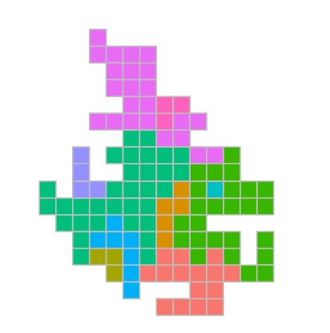
BlockR: An Areal Spatial Anonymization and Visualization Tool
Statisticians address analysis of police use of force
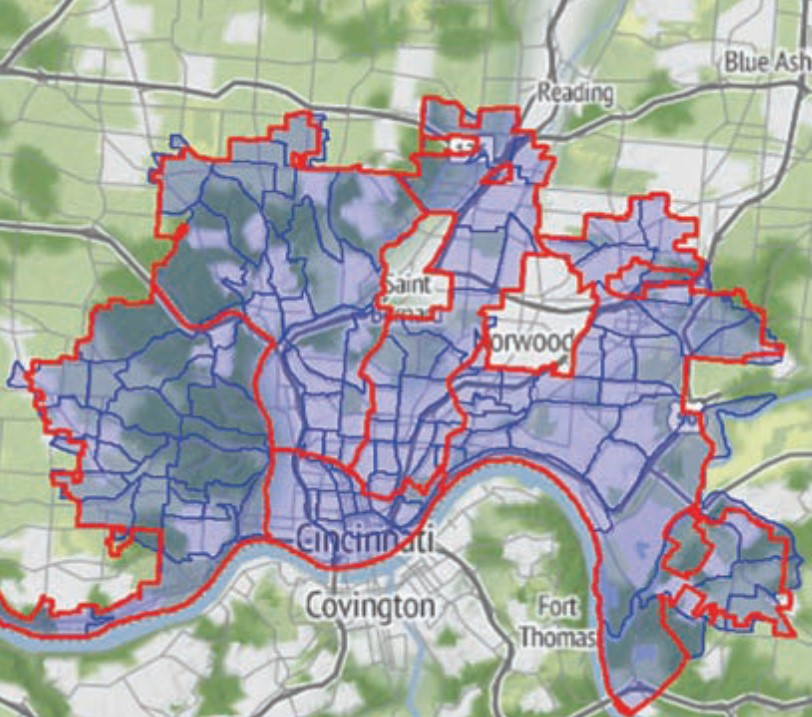
Issues in the spatial analysis of police use of force data
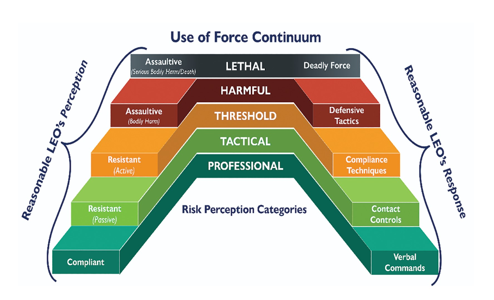
Toward standardization of police use of force data
Counting on justice bridging quantitative research and community empowerment
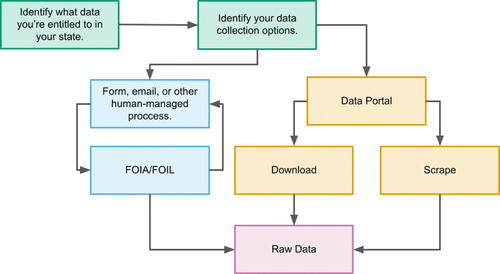
Data Collection and Analysis for Small-Town Policing: Challenges and Recommendations
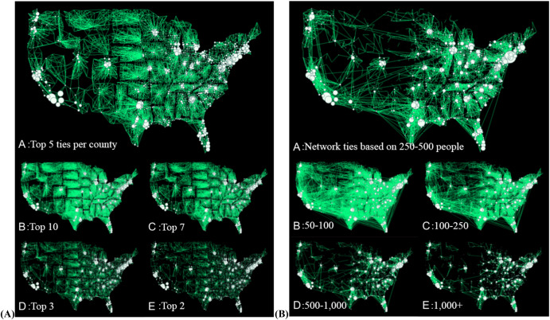
Connected in health: Place-to-place commuting networks and COVID-19 spillovers
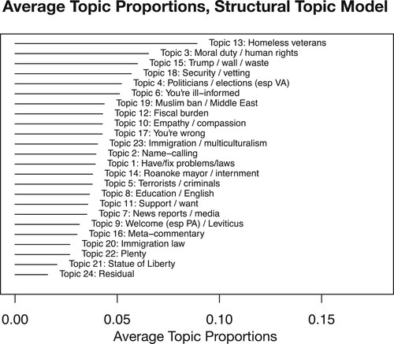
Analyzing Community Reaction to Refugees through Text Analysis of Social Media Data
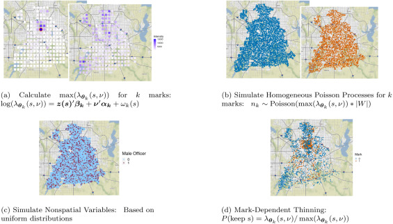
A two-stage Cox process model with spatial and nonspatial covariates
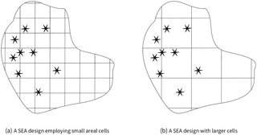
A Monte Carlo Analysis of False Inference in Spatial Conflict Event Studies
Data Analysis Using Statistics
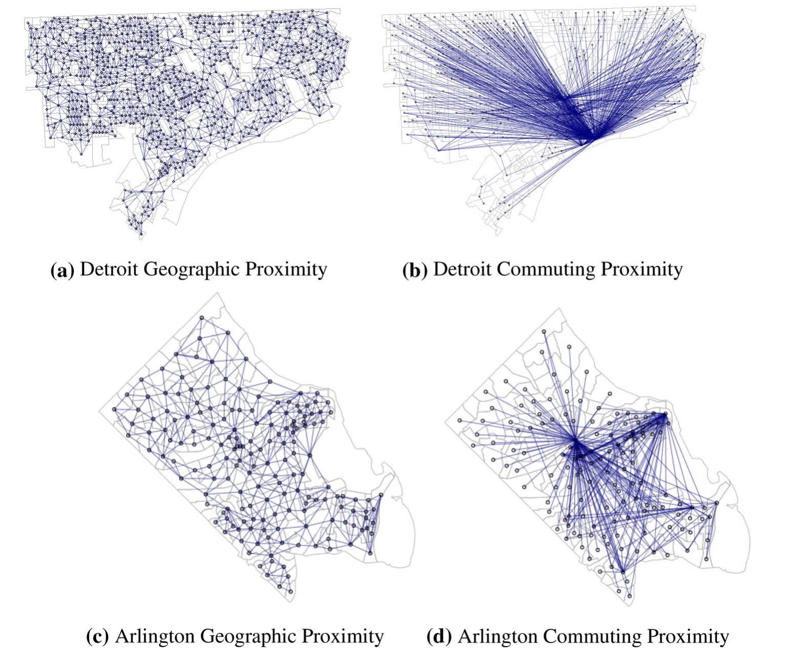
Modeling the Social and Spatial Proximity of Crime: Domestic and Sexual Violence Across Neighborhoods
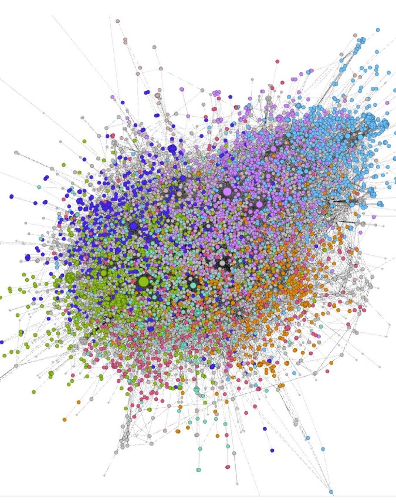
Modeling the Impact of Python and R Packages Using Dependency and Contributor Networks
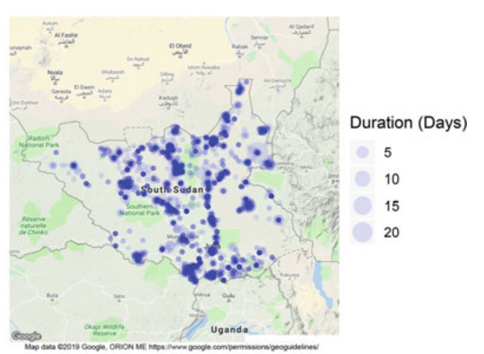
Analysis of Conflict Diffusion over Continuous Space
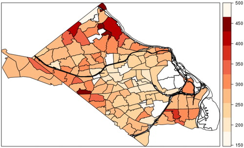
Spatial Modeling of Response Time to Structure Fire
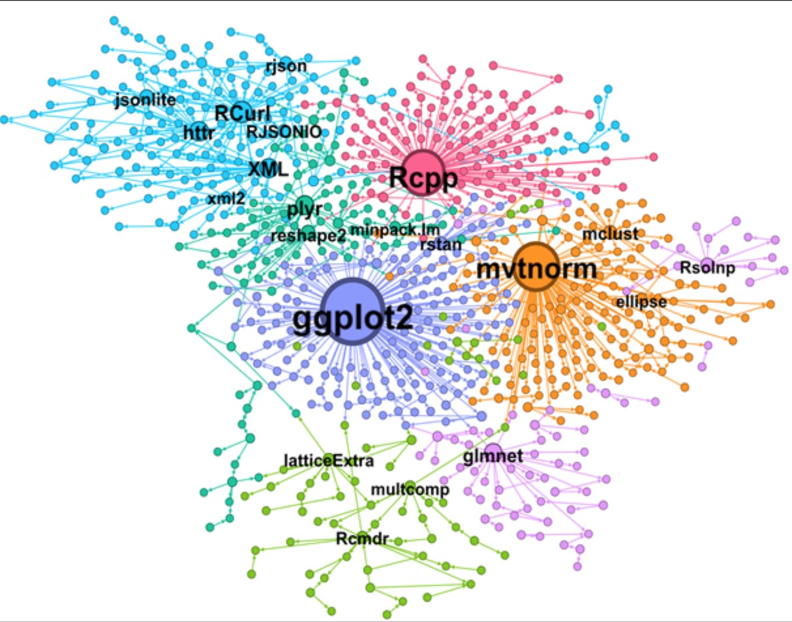
Open Source Software as Intangible Capital: Measuring the Cost and Impact of Free Digital Tools
Channeling the Power of Big Data Towards Social Good: Three Proposals for Progress
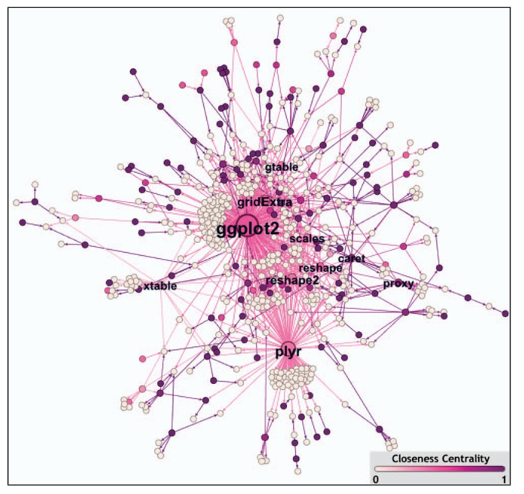
Modeling the Impact of R Packages Using Dependency and Contributor Networks
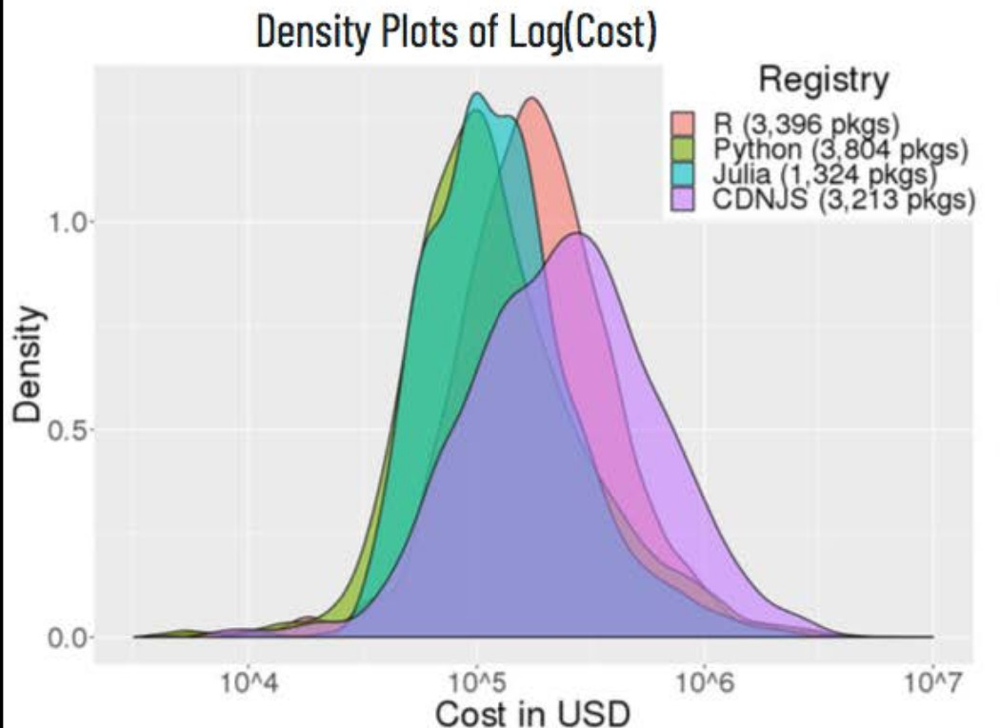
The Scope and Impact of Open Source Software: A Framework for Analysis and Preliminary Cost Estimates
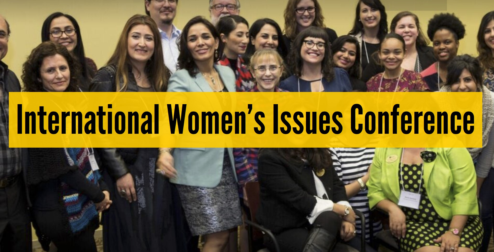
Bridging Conscious Partiality and Intersectionality through Action Research